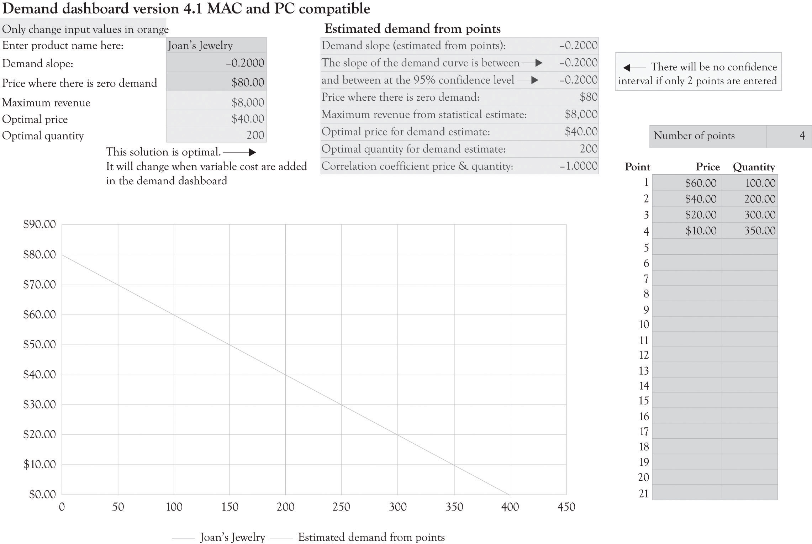
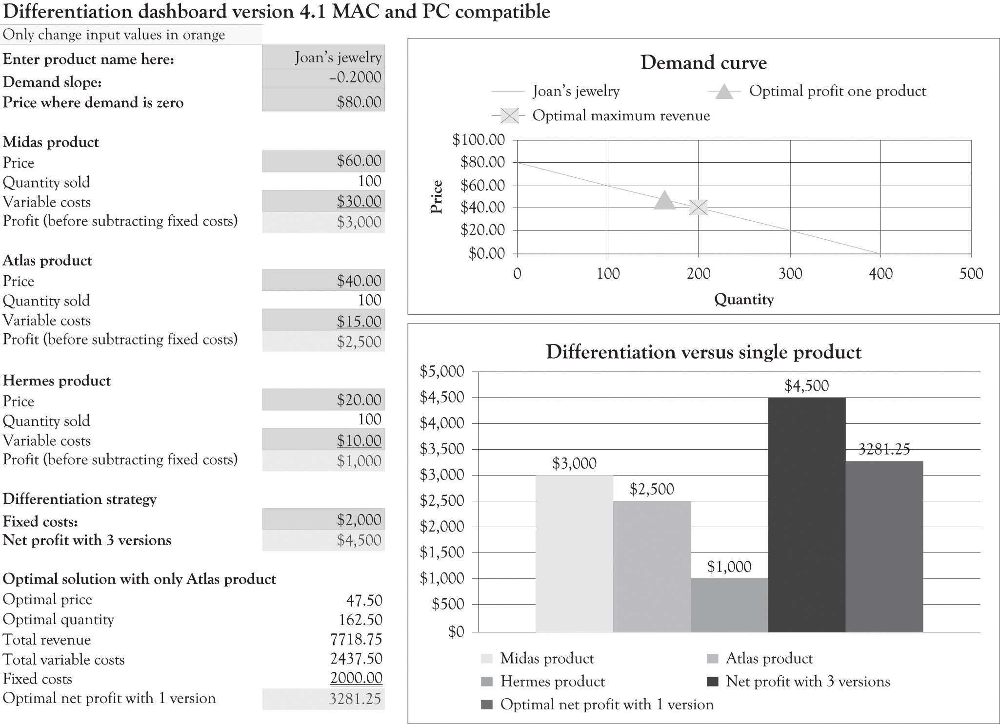

We have developed a spreadsheet tool that can be used to assist in product differentiation. You are encouraged to visit http://glsanders.wordpress.com/ and obtain the newest version of the spreadsheet. You are also encouraged to read the Appendix of this chapter because it contains an overview of the math for identifying the optimal price and quantity for a demand equation.
Figure 3.6 "Demand Analysis Dashboard" illustrates the demand spreadsheet for Joan’s jewelry. The demand dashboard spreadsheet is used to calculate the slope and the maximum amount consumers would be willing to pay for a product. Figure 3.7 "Differentiation Dashboard Using Demand Analysis Dashboard Input and Financial Data from Joan" presents a differentiation dashboard spreadsheet. The differentiation dashboardUsed to determine profitability due to product differentiation. Also computes an optimal solution for the demand curve when only one version is offered. is used to determine the profitability due to product differentiation. The differentiation dashboard also computes an optimal solution for the demand curve when only one version is offered. The optimal price would be $47.50 and, at that price, Joan would sell 162.5 jewelry boxes. As you can see from the solution in Figure 3.7 "Differentiation Dashboard Using Demand Analysis Dashboard Input and Financial Data from Joan", the monthly cash flow using the optimal solution yields a monthly profit of $3,281.25, which is still not very close to the monthly net profit of $4,500 with three versions. The value of the business would be $393,750 if we assume a cost-of-capital value of 10% (12 × $3,281.25/0.10). The optimal solution is very helpful for identifying a starting point for selecting a price point for one product and for identifying price points for additional versions. The differentiation dashboard is very useful for conducting sensitivity analysis and what-if analysis for differentiating up to three products and services.
Figure 3.6 Demand Analysis Dashboard
Figure 3.7 Differentiation Dashboard Using Demand Analysis Dashboard Input and Financial Data from Joan
